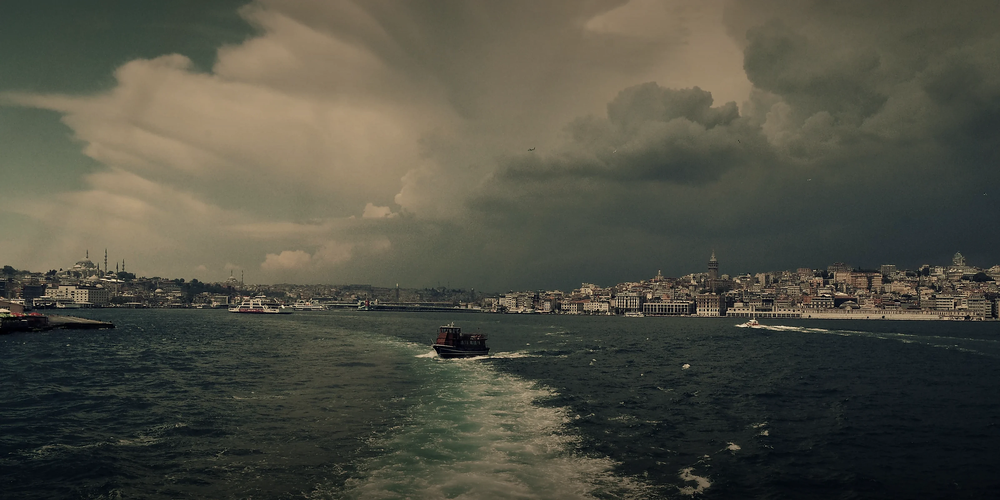

索里纳
坐落在普罗米修角落的海青石之乡
海青石之乡
索里纳位于整个普罗米修的西南方，东北方的诺尔安诺山脉断绝了索里纳与王城卡佩托缇娜直接往来的可能性，好在四面环海使得索里纳的航海业发展迅猛，与同样在以海为生的羲和百川有密切来往，最后达成合作关系，索里纳在羲和百川的搭桥牵线下与东南方的乌尔维克来往变得十分密切，索里纳输送海青石和一些稀有的海底矿石换取蒸汽机器和技术，索里纳的贸易和蒸汽工艺不断发展。索里纳的居民种类较多，但人类占其中大多数，其次便是业族。因为靠海，索里纳的渔业和航海业极为发达，靠海的地理位置使得索里纳的海青石的产量远大于哑青石。在乌尔维克的帮助下索里纳的蒸汽工业也登堂入室，有了不小的成就，蒸汽工业的产物通常用于船只和城邦建设上，国防，因为海青石产量较大，因此索里纳人从小于海青石为伴，城中男女老少或多或少会一些青蓝魔咒。索里纳拥有一支名为断浪骑士团的军队，其中士兵人均武法双修，极其擅长青蓝魔咒的同时武力不俗，是索里纳的主要战力。索里纳对于海青石的研究远超于普罗米修上的其他国家，并且掌握着普罗米修极少数的海青石加工工艺——海青石结晶锻术
海青石结晶锻造术
索里纳工匠研究出海青石结晶锻造发并非偶然
世间人们都认为海青石魔法体系在哑青石魔法体系之下，因为人们对海青石的了解都只在表面，没有进行过于深入的研究，因为比起花费时间研究加工海青石，大多数人宁愿把时间和精力花费在加工哑青石上。唯独索里纳不同，索里纳因为地理位置的缘故，海青石的产量是哑青石的十几倍，常年与海青石为伴的索里纳人，不愿意放弃对海青石的研发，在蒸汽科技发展后，索里纳青蓝魔咒师与蒸汽工匠共同的研究，经过一代又一代索里纳工匠的传承和研究下，索里纳终于研究出能加工海青石的方法——海青石结晶锻造术
海青石结晶锻造师必须同时掌握蒸汽工艺，晶石研磨和四阶或四阶以上的青蓝魔咒才可以进行海青石结晶锻造
海青石结晶锻造术出的产物被人们称之为：“ 青蓝结晶体”
青蓝结晶体以使用方式区分分为两种，第一种则是破坏青蓝结晶体直接释放储存在其中的魔咒，青蓝结晶体中可以刻录多个青蓝魔咒并且刻录纹路将魔咒进行整合，这种方式所释放魔咒对使用者要求极低，几乎所有人都能借助这种方式释放刻录在青蓝结晶体上的魔咒。第二种则是对青蓝结晶石进行开孔，开孔后可以随时催动青蓝结晶体中储存的魔咒，青蓝结晶体上刻有特殊纹路可以引导魔法在青蓝结晶体中重构，所以不必担心青蓝结晶体内的魔咒消耗殆尽，多个青蓝结晶体可以进行拼凑组合，形成魔法回路等多结构魔法造物
索里纳人利用海青石结晶锻造术制作捏碎就可以生成特殊氧气泡包裹自己的青蓝结晶体，使潜入深海采集成为可能，同时将深海开采的金属矿石供应给羲和百川达成合作目的
断浪骑士团

汇聚九江，统御四海
断浪骑士团：
断浪骑士团为索里纳本地规模最大的骑士团，在其初创之际，也就是神罚降临之后，海上异常频发，海生业兽大量滋生，让本就不平静的海面更加危险，海生业兽上岸和出海船因业兽而遇难的事件也频频发生，对索里纳以及整个普罗米修沿海地区构成了严峻的威胁，断浪骑士团便应运而生，肩负起了抵御海上灾难的重任，随着岁月的流转与不断的发展壮大，断浪骑士团的势力范围逐步从索里纳周边的海域向更为广阔的普罗米修大多数海域拓展延伸
如今，在这片广袤的地域里，形成了一个相对明确的分工格局：内陆地区出现的祸乱主要由炎鸮团负责平息，而海上乃至海内发生的各种灾祸，则由断浪骑士团承担起应对与解决的职责
断浪骑士团整体风格为兼修青石法术和武之法则的骑士团，擅长海上作战甚至海中作战，据索里纳俗语所说
如果整个普罗米修都是海就没有炎鸮团什么事了
断浪骑士团如今组织架构已经十分完善，和传统的骑士团类似，并新增了许多新的职位
| 海统御（团长） | 断浪骑士团最高领导者，全面负责骑士团的管理，决策和规划，可以代表骑士团进行外交，军事沟通等活动 |
|---|---|
| 副誓领（副团长） | 协助团长处理日常事务，团长不在时，代理团长的职责，行使相应的权力，负责骑士团内部的资源分配和人员调配，监督各分队或部门的工作执行情况，确保各项任务顺利完成 |
| 断浪骑士分队长 | 能够组织多为骑士长组织一定规模的团队，拥有十分丰富的战术 |
| 断浪骑士长 | 能够带领多名断浪骑士组成小队，驾驶船只执行各项任务，组织日常训练与战术演练 |
| 断浪之骑士 | 断浪骑士团的基本战力，肩负海上巡逻、警戒与防御重任 |
| “海钻” | 断浪骑士为数不多的文职，大多处理断浪骑士团内部的行政和后勤事务，包括物资采购、财务管理、人员档案管理等，组织和协调骑士团的各种活动和训练 |
| “暗流” | 由于普罗米修出现极端反社会分子而诞生的职位，暗流需要潜伏暗处收集情报，涵盖敌情、周边态势与各方动态，为骑士团决策提供关键信息 |
| “浪沫” | 断浪骑士本土化医师，浪沫大多在后场进行治疗，断浪骑士团船只出海时，船上总会有浪沫 |
| “潮汐” | 断浪骑士团预备役，需要长时间考核才可转正 |